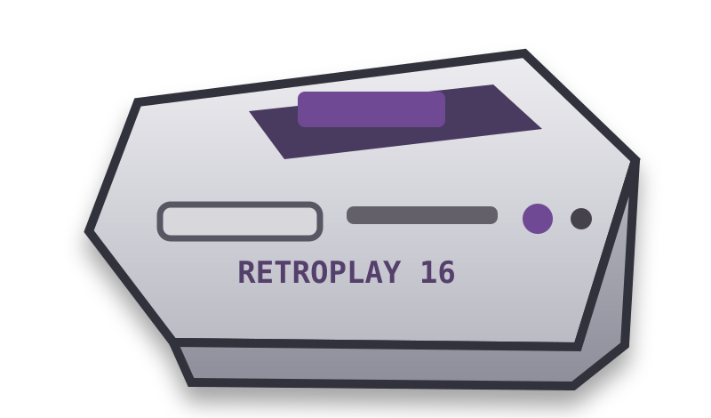

🎮 CONSOLE CORNER
🎮
Jogo em destaque: Carregando...

RetroPlay
- Catálogo organizado por console.
- Jogos com links próprios para QR Code.
- Player no navegador com tela cheia.
- Painel que gera o cadastro do games.json.
🕹 CONSOLES
0 SISTEMAS
★ BIBLIOTECA DE JOGOS
0 JOGOS